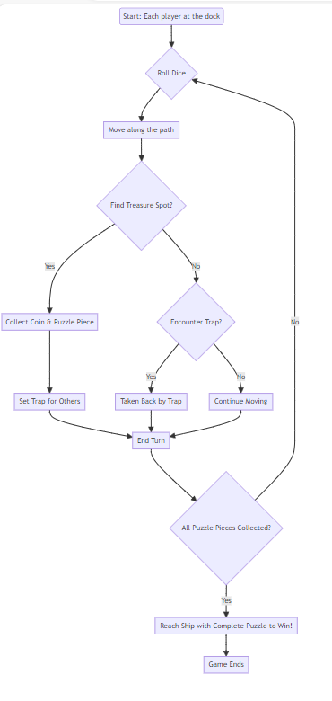

Stage 1: Game Concept and Design Brief
Introduction
Welcome to the first stage of your table-top board game development journey. Over the course of one week, you will design a simple, innovative table-top game that can be explained and played using minimal components. The challenge is to create a game with a compelling objective and straightforward rules, while focusing on creativity and player engagement within a two-player format. This lesson walks you through the objective, the deliverables you need to produce, the constraints you must design within, and a set of sample ideas and mechanics to inspire your own concept.
Objective
This week, your task is to develop a simple, innovative table-top game that can be explained and played using minimal components. The game should offer a compelling objective and straightforward rules, focusing on creativity and player engagement within a two-player format. Keep the design lean: the strength of your concept should come from clever mechanics and clear rules, not from a large number of components.
Deliverables
Your submission for this stage consists of three parts:
- Game Concept and Rules Document. Your game’s concept and rules need to be concisely presented within a two-page limit.
- Page 1: A short description and instructions for your game, clearly outlining the objective, basic rules, and any unique gameplay elements.
- Page 2: The game board or main layout, designed to be engaging and functional for the gameplay.
- Initial Design Sketches/Digital Representations. Provide sketches or digital representations of any additional game components such as cards, tokens, or objects that enhance the gameplay. These should be supplementary and not exceed the core game’s two-page presentation.
- Blog Post Reflection. Craft a reflective blog post detailing the process of developing your game concept, focusing on creative challenges, design decisions, and the anticipated player experience.
Constraints and Limitations
Work within the following boundaries as you design your game:
- The entire game must fit on 2 x A4 pieces of paper.
- You are encouraged to design or use additional components like cards and tokens, keeping in mind the game’s expansion in later stages.
- The game should be designed for two players initially, with plans to adapt it for multiple players.
- Any extra items needed to play the game, such as six-sided dice, should be commonly available or easily substitutable (e.g., pencils, coins, or markers). Websites such as https://www.random.org/dice can substitute physical dice if necessary.
- Your game and any additional components can be drawn by hand or created digitally. Ensure any photos are clear and well-lit.
Submission Format
- Compile your game concept, rules, and board into a single Word or PDF document. Include photos or digital files of additional components if applicable.
- Submit the reflective blog post as a separate document or via a blog link, detailing your creative process and concept development journey.
Sample Ideas
To spark your thinking, here are ten sample game concepts, each showing how a title, board description, objective, player interactions, unique mechanism, and game elements can fit together into a coherent design.
Monster March — Board: a town with houses, a forest, and a safe zone. Objective: escape monsters to the safe zone. Player interactions: use tokens to move monsters. Unique mechanism: a spinner for movement and monster actions. Rules summary: spin and move, using tokens to direct monsters. Gameplay example: use a token to redirect a monster towards a rival. Game elements: spinner, monster tokens, “scare” tokens, player pieces.
Garden Grow — Board: garden plots with various plants. Objective: grow the most vibrant garden. Player interactions: plant weeds in others’ gardens. Unique mechanism: weather dice affecting growth. Rules summary: roll for actions, with weather dice influencing plant growth. Gameplay example: a rain result on the weather dice accelerates growth. Game elements: weather dice, plant tokens, weed tokens, player pieces.
Pirate Plunder — Board: a treasure map with paths, traps, and treasures. Objective: collect coins and complete the puzzle first. Player interactions: set traps to delay others. Unique mechanism: puzzle pieces at treasure spots. Rules summary: move to collect, use traps to slow down others, and complete the puzzle. Gameplay example: find a piece that adds to your treasure map puzzle. Game elements: treasure coins, puzzle pieces, traps, player pieces.
Space Jump — Board: a galaxy map with planets and black holes. Objective: be first to jump back to Earth. Player interactions: pull others into gravity wells. Unique mechanism: gravity dice for jumps or black holes. Rules summary: roll to jump between planets, with gravity dice determining hazards. Gameplay example: rolling a black hole makes a player skip a turn. Game elements: gravity dice, player spacecraft pieces.
Critter Race — Board: a backyard path with natural obstacles. Objective: race your critter to the finish line. Player interactions: place obstacles in opponents’ paths. Unique mechanism: critter dice for overcoming obstacles. Rules summary: roll critter dice to move and navigate obstacles. Gameplay example: rolling a “dig” bypasses a rock obstacle. Game elements: critter dice, obstacles (rocks, ponds), player critters.
Wizard’s Duel — Board: a circular duel arena with spell zones. Objective: reach the centre to win the duel. Player interactions: cast spells to hinder opponents. Unique mechanism: a spell wheel for casting power. Rules summary: spin to cast spells, aiming to push opponents back. Gameplay example: spinning a “freeze” stops an opponent’s advance. Game elements: spell wheel, spell tokens (freeze, push), player wizards.
Museum Heist — Board: a museum layout with exhibits and lasers. Objective: steal an artifact and escape first. Player interactions: activate alarms against rivals. Unique mechanism: a laser pointer for navigating lasers. Rules summary: move to steal, using the laser pointer to avoid security. Gameplay example: navigate a laser section without touching the beam. Game elements: laser pointer, artifact tokens, alarm tokens, player thieves.
Dinosaur Dig — Board: a dig site with soil layers and fossils. Objective: unearth and assemble a dinosaur first. Player interactions: use sandstorms to cover digs. Unique mechanism: tools for digging through layers. Rules summary: use tools to find fossils, with sandstorms resetting progress. Gameplay example: using a brush tool uncovers a rare fossil piece. Game elements: digging tools (shovels, brushes), fossil pieces, sandstorm cards, player archaeologists.
Starry Sky — Board: a night sky map with constellations. Objective: complete constellations first. Player interactions: block paths with cloud markers. Unique mechanism: dice to “draw” stars for constellations. Rules summary: roll to connect stars, with clouds blocking paths. Gameplay example: rolling to connect the last two stars of Orion’s Belt. Game elements: star dice, constellation guides, cloud markers, player astronomers.
Common Game Mechanics
Understanding established game mechanics can help you build your own concept on solid foundations. The table below summarises some of the most frequently used mechanics in board games and a well-known example of each.
| Game Mechanic | Description |
|---|---|
| Roll-and-Move | Players roll dice and move pieces based on the outcome, e.g., Monopoly. |
| Set Collection | Players collect certain sets of cards or tokens to achieve a goal, e.g., Ticket to Ride. |
| Deck Building | Players start with a basic deck of cards and acquire more powerful cards to improve their deck over time, e.g., Dominion. |
| Worker Placement | Players place tokens on specific spots on the board to take actions or gain resources, e.g., Agricola. |
| Area Control | Players compete to dominate specific areas or territories on the board, e.g., Risk. |
| Tile Placement | Players place tiles to create or expand game areas, often scoring points based on placement, e.g., Carcassonne. |
| Resource Management | Players collect and manage resources (e.g., wood, stone, gold) to build structures, units, or points, e.g., Catan. |
| Auction/Bidding | Players bid resources or points to gain advantages or items in the game, e.g., Power Grid. |
| Cooperative Play | Players work together towards a common goal, often against the game itself, e.g., Pandemic. |
| Card Drafting | Players select cards from a shared pool to gain some advantage or fulfil objectives, e.g., 7 Wonders. |
| Hidden Roles | Players have secret roles or objectives unknown to others, creating tension and bluffing opportunities, e.g., The Resistance. |
| Dice Rolling | Dice determine outcomes or resources, with players often trying to mitigate luck through strategy, e.g., King of Tokyo. |
| Simulation | The game simulates a real-life process, system, or situation, requiring strategic planning and resource allocation, e.g., Terraforming Mars. |
| Push Your Luck | Players take risks to potentially gain more rewards, knowing they might lose everything they’ve gained, e.g., Quacks of Quedlinburg. |
| Point-to-Point Movement | Players move pieces from one discrete point to another, often to strategically position themselves or block opponents, e.g., Tsuro. |
| Narrative/Storytelling | The game includes a strong narrative element, with players’ actions affecting the direction and outcome of the story, e.g., Betrayal at House on the Hill. |
| Pattern Building | Players arrange pieces or cards to create specific patterns or configurations for points or achievements, e.g., Azul. |
Worked Example: A Turn-by-Turn Flow
To see how these mechanics can combine into a working game loop, consider the following flow, based on a treasure-collecting game similar to Pirate Plunder. Each player starts at the dock and takes turns rolling dice, moving along a path, and reacting to what they find, until someone collects all the puzzle pieces and races back to the ship to win.

This kind of diagram is a useful design tool in its own right: mapping out your own game’s turn structure as a flowchart can help you spot missing rules, dead ends, or turns that are unclear before you commit them to paper.
Summary
In this stage, you have learned what is required to design and present a simple, innovative two-player table-top game within a two-week, two-page constraint. You now know the three deliverables expected of you: a concise game concept and rules document, supporting sketches or digital representations of any extra components, and a reflective blog post on your design process. You have also seen the constraints that shape the design space, a submission format to follow, ten sample game ideas spanning different themes and mechanisms, a reference table of common board game mechanics, and a worked example showing how mechanics combine into a full turn cycle. Use these resources as a springboard: borrow structures from the sample ideas and mechanics table, but shape them into something original that reflects your own creative decisions and anticipated player experience.